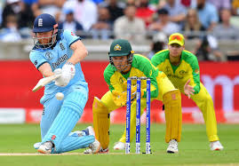

Top 5 Most Popular Sports
Football (Soccer)
The most popular sport globally with over 4 billion fans. Played professionally in almost every country.

Cricket
Extremely popular in countries like India, Australia, England, and Pakistan. Known for its long matches and passionate fans.
Basketball
Fast-paced and exciting, basketball is widely played in the U.S., China, and Europe. The NBA is a top league.
Tennis
Known for Grand Slam tournaments like Wimbledon and the US Open, tennis is played both recreationally and professionally worldwide.
American Football
Most popular in the United States, with the Super Bowl being one of the most-watched events each year.